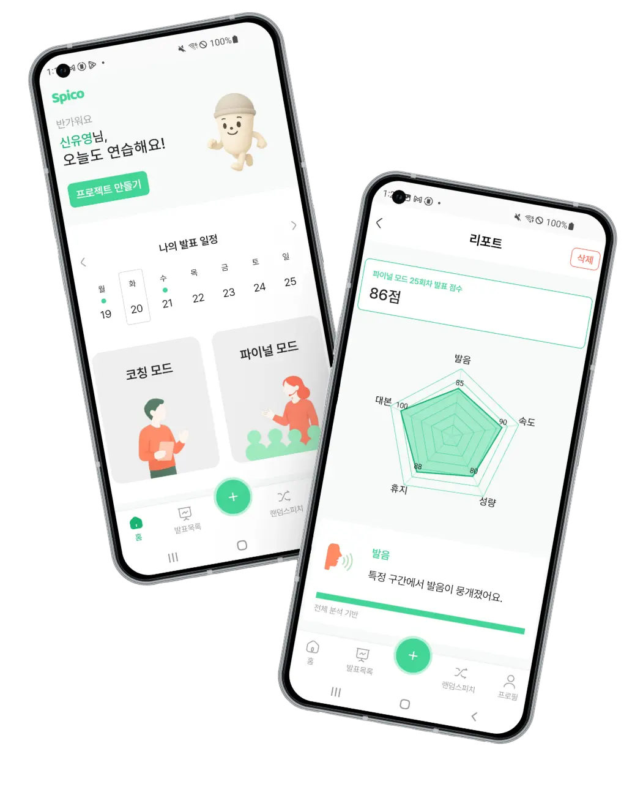
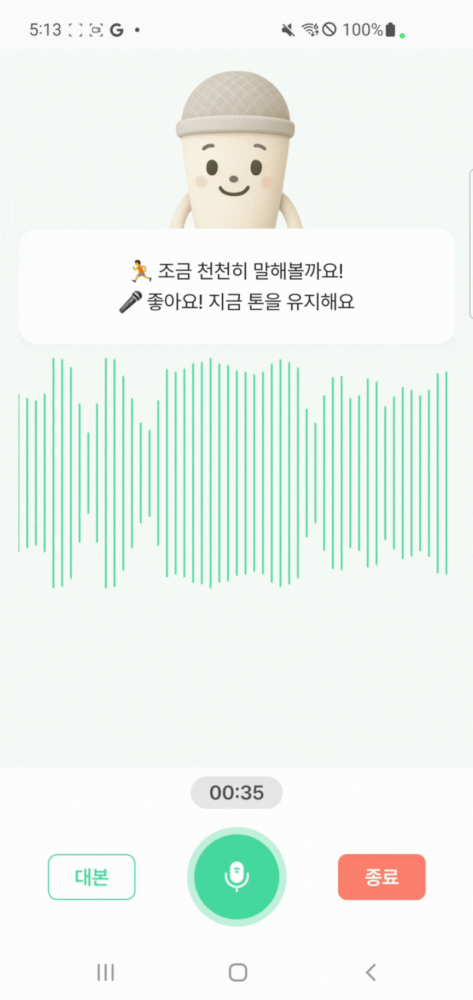
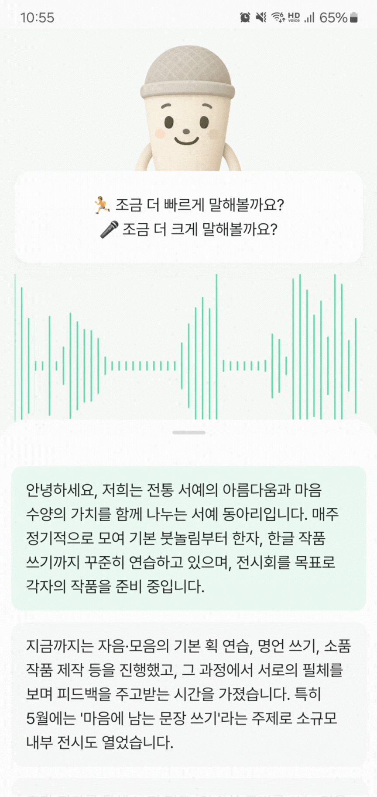
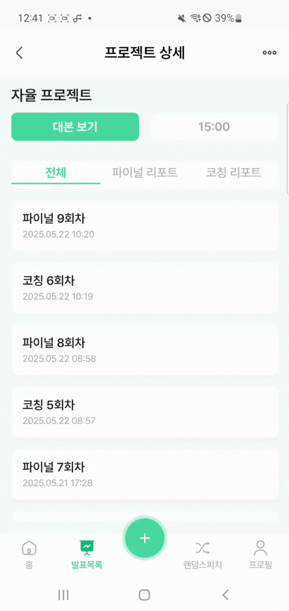
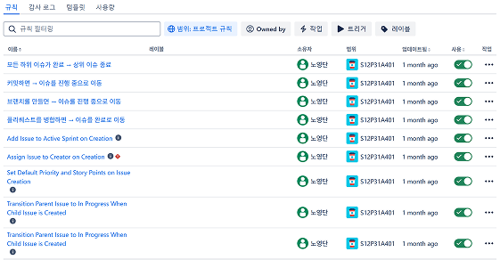
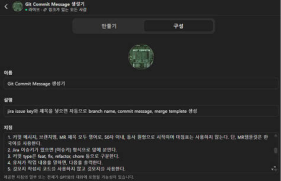

학교 발표, 면접 등 다양한 상황에서 말하기는 필수가 되었지만,
혼자 연습하긴 어렵고 민망한 발표.
Spico는 혼자서도 발표 실력을 키울 수 있도록, 실시간 피드백, 청중 모드, 발화내용에 따른 예상질문 등 실전 연습 환경을 제공합니다.
발표가 두려운 진짜 이유는 준비가 부족해서가 아니라, 머릿속 생각과 입 밖으로 나오는 말이 다르기 때문입니다. Spico는 그 차이를 줄여 실전 감각을 키워줍니다.
녹화 후 확인하는 사후 피드백의 한계
실시간 가이드와 피드백 리포트

대본을 보며 실시간 분석 및 피드백을 제공받는 기초 연습 모드입니다.
실제 청중 앞에서 하듯, 예상 질문(Q&A)과 타이머를 포함한 실전에 가까운 모드입니다.
선택한 카테고리의 최신 기사 1개와 AI가 생성하는 질문에 대해 순발력 있게 답변하는 모드입니다.
Android SpeechRecognizer로 실시간 발화 내용을 분석하여 대본 위치를 정밀하게 추적하고, 음성 파형(RMS)을 시각화하여 몰입감 있는 발표 환경을 구현했습니다.
롱프레스-드래그(순서 변경) 및 스와이프(삭제) 등 직관적인 제스처를 도입하여, 사용자가 흐름을 끊지 않고 빠르고 편리하게 대본을 수정할 수 있는 UX를 구현했습니다.
Presentation, Domain, Data 레이어를 엄격히 분리하여 의존성을 단방향으로 관리하고, 단위 테스트가 용이한 유연한 아키텍처를 설계했습니다.
GitLab Hook과 Jira를 연동하여 이슈 상태 관리를 자동화하고, 팀 컨벤션에 맞춘 GPT 기반 커밋 메시지 생성기를 도입해 개발 커뮤니케이션 효율을 극대화했습니다.
Partial Result 기반 유사도 측정으로 현재 읽고 있는 문단을 자동 추적합니다.
성량과 발화 속도를 실시간 분석하여 시각적 코칭을 제공합니다.

사용자의 목소리 파형을 즉각적으로 시각화하여 생동감을 더합니다.
연습 종료 후 AI가 발화 내용을 요약하고 예상 질문을 생성합니다.
메뉴를 찾아 들어갈 필요 없이, 롱프레스(Long-Press)로 문단 순서를 변경하고 스와이프(Swipe)로 삭제할 수 있습니다. 모바일 환경에 최적화된 제스처 시스템 덕분에, 사용자는 흐름 끊김 없이 생각하는 속도 그대로 대본을 수정할 수 있습니다.

Presentation, Domain, Data 레이어를 엄격히 분리하여, 비즈니스 로직이 외부 요소(UI, DB)에 의존하지 않는 단방향 의존성 규칙을 적용했습니다.
기능이 추가될수록 복잡해지는 코드의 유지보수성을 확보하고, UI 로직과 비즈니스 로직의 강한 결합도를 해결하기 위해 도입했습니다.
모듈 간 결합도를 낮춰 변경에 유연하게 대처할 수 있었으며, 특히 UI 없이도 핵심 로직을 독립적으로 검증하는 테스트 용이성을 극대화했습니다.

브랜치 생성 시 이슈 상태가 자동 전환되고, MR 완료까지 모든 과정이 동기화되는 Zero-Click 이슈 관리 환경을 구현했습니다.

이슈 키워드만 입력하면 브랜치명, MR 템플릿, 커밋 메시지까지 팀 컨벤션에 맞춰 자동으로 생성해주는 생성기를 제작했습니다.